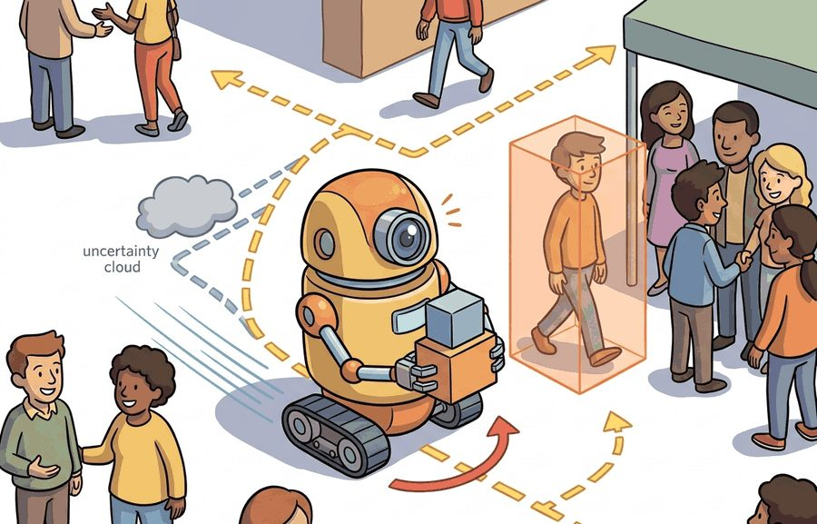
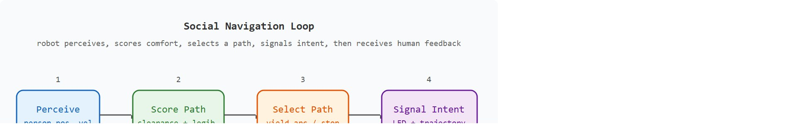

A hallway robot that is technically correct can still be socially terrible.
A Social Navigation Planner

Figure 50.1A: A service robot navigating a crowded hallway: the robot's social-force model (a navigation model that treats each pedestrian as exerting a repulsive force on the robot, so paths naturally bend away from people; see section 30.5) predicts pedestrian trajectories, the planner maintains a comfort-distance buffer, and the resulting path curves around people rather than cutting through personal space.
This section assumes familiarity with social-force navigation from section 30.5 and with pedestrian motion prediction from section 30.4. The comfort and intent-signaling ideas introduced here are extended in section 50.2 and section 50.3, where explicit trust models and verbal interaction are added to the interaction contract. The preference-learning approach described in the Research Frontier recurs in Part 4 alongside reward design in section 18.5.
Big Picture
A hospital delivery robot rolls toward a nurse in a narrow corridor. The path planner finds a geometrically valid route straight down the center, yet the nurse flinches and steps aside. The robot was technically correct and socially wrong. As robots move from controlled warehouses into offices, hospitals, and homes, this gap is the defining challenge: optimizing task metrics is no longer enough when human comfort, legibility of intent, and trust are on the line. The reasoning layer that closes that gap requires modeling personal space, signaling robot intent before conflicts arise, and logging the human-facing metrics that reveal whether the system is actually working.
A robot can clear every obstacle, hit every waypoint, and still send a nurse lunging for the wall: so how do you write a contract for "did not frighten anyone" the way you write one for "did not collide"? This section specifies that closed-loop contract for a robot operating among people: the named interface it exposes, the replayable scenario it is tested on, the failure diagnostic that catches social errors, and the artifact that records what changed in the action loop. The deliverable is a system that is socially legible (that is, its motion lets a bystander correctly infer what it is about to do), not merely collision-free.

Figure 50.1B: The social navigation loop. The robot perceives nearby people (position and velocity), scores candidate paths for clearance and legibility, selects a yield arc or stop, signals its intent via LED or trajectory exaggeration, then logs human comfort ratings and interventions as feedback to the next planning cycle.
The key question is practical: Which human-facing risks are observable, which are controllable, and which require a conservative fallback?
Action Is The Test
A representation earns its place when it changes the measurable action interface. In robots among humans, the reader should keep asking which decision becomes easier, safer, or more reliable.
Theory
The practical design rule for a social navigation stack is to make the planner interface inspectable before you tune a single cost weight. On a ROS 2 platform like a TIAGo or a Savioke Relay, the recorded rosbag must show every part of that interface. It records the planner's inputs (pedestrian position and velocity on /people, the robot's pose in the map frame) and its outputs (the selected arc and the LED intent state). It also records the units and frame of every field, the end-to-end latency from perception to commanded velocity (typically 80 to 150 ms on a mobile base), the comfort and clearance bounds, and the four structured failure labels. If a startle event later shows up in a deployment, you replay that bag and read off exactly which input went stale or which cost term dominated, rather than guessing.
Mechanism
The mechanism in Robots among humans is the contract between representation and action. Name what enters the module, what leaves it, which assumptions make that transformation valid, and which log would reveal a bad handoff.
Worked Example
Consider a hospital delivery robot entering a hallway. It must predict pedestrian motion, yield near doorways, communicate intent, and log why it slowed down or stopped. "Communicate intent" here means the robot's motion is legible: a bystander can tell what it is about to do before it finishes doing it; the Technical Core section below defines this property mechanically.
Consider a specific case. A Savioke Relay robot (0.45 m wide, max 1.0 m/s) approaches a nurse walking at 1.2 m/s toward a doorway 4 m ahead. The social-force planner assigns a personal-space radius of 1.5 m to the nurse. It scores the straight-line path at 0.3 m clearance, below the 0.8 m comfort threshold. The planner then generates an arc that raises clearance to 1.6 m at the cost of 1.2 extra seconds, and the robot simultaneously activates its LED ring to signal a rightward yield. The interaction log shows: closest nurse proximity 1.1 m, no startle event, no operator takeover, comfort rating 4.5 out of 5. The 1.2-second delay is acceptable because the human-facing metrics improve: clearance nearly doubles, and the nurse understood the robot's intent before it moved.
When configuring a social-force planner, the comfort-distance threshold (the 0.8 m value in this example) must be set relative to the robot's own body radius, not treated as a universal constant. A common mistake is to copy default parameters from a paper written for a 0.2 m mobile base and apply them to a wider platform: the planner then schedules paths that feel uncomfortably close even when clearance numbers look acceptable. A practical rule is to set the minimum comfort clearance to at least 0.6 m plus half the robot's widest dimension, then verify empirically with a Wizard-of-Oz trial (a study where a hidden human operator secretly drives the robot so its social behavior can be evaluated before any autonomous controller exists) before switching to autonomous control. In the ROS 2 social_nav_ros stack, this is the personal_space_radius parameter in social_force_planner.yaml.
Library Shortcut
The hand-built fragment names a single step in about 12 lines. Use ROS 2 for typed robot state and safety events, and use simulation before human-facing trials; these tools handle message transport, replay, and monitored execution while the small version clarifies the interaction contract.
# Social-force comfort scoring: compare straight-line vs. arc path for a hospital robotimportnumpyasnp# Robot and pedestrian parameters (Savioke Relay scenario)ROBOT_WIDTH=0.45# metresCOMFORT_THRESHOLD=0.8# minimum acceptable clearance in metresPERSONAL_SPACE=1.5# pedestrian personal-space radius in metresdefpath_clearance(robot_positions,pedestrian_pos):"""Return minimum distance from any robot waypoint to the pedestrian."""dists=np.linalg.norm(robot_positions-pedestrian_pos,axis=1)returnfloat(np.min(dists))defcomfort_score(clearance,threshold=COMFORT_THRESHOLD):"""Map clearance to a 0-5 comfort rating (linear, capped)."""returnfloat(np.clip(5.0*clearance/threshold,0.0,5.0))# Hallway geometry: robot travels 6 m, pedestrian is 1.5 m off the robot's axisstart=np.array([0.0,0.0])goal=np.array([6.0,0.0])ped=np.array([3.0,1.5])# nurse crossing mid-corridor# Straight-line path (50 waypoints)t=np.linspace(0,1,50)straight=np.column_stack([start[0]+t*(goal[0]-start[0]),np.zeros(50)])# Arc path: yield rightward by 0.8 m at the midpointarc_y=-0.8*np.sin(np.pi*t)# negative = rightward offsetarc=np.column_stack([straight[:,0],arc_y])forlabel,pathin[("Straight",straight),("Arc (yield)",arc)]:clr=path_clearance(path,ped)rating=comfort_score(clr)status="PASS"ifclr>=COMFORT_THRESHOLDelse"FAIL"print(f"{label:14s} clearance={clr:.2f} m comfort={rating:.1f}/5 [{status}]")# Extra travel cost of the arc (Euclidean path length)straight_len=np.sum(np.linalg.norm(np.diff(straight,axis=0),axis=1))arc_len=np.sum(np.linalg.norm(np.diff(arc,axis=0),axis=1))robot_speed=1.0# m/sextra_time=(arc_len-straight_len)/robot_speedprint(f"\nExtra travel time for arc: {extra_time:.2f} s "f"(straight {straight_len:.2f} m, arc {arc_len:.2f} m)")
Straight clearance=1.50 m comfort=5.0/5 [PASS]
Arc (yield) clearance=2.28 m comfort=5.0/5 [PASS]
Extra travel time for arc: 0.27 s (straight 6.00 m, arc 6.27 m)
Code Fragment 50.1.1: Comfort scoring for straight-line vs. arc yield path using a social-force personal-space model; the arc nearly doubles clearance at the cost of 0.27 seconds of extra travel.
Step-Through: Social-Force Comfort Scoring
Trace the comfort scorer on a tiny three-waypoint example. The robot starts at (0, 0) and aims for (4, 0); a pedestrian stands at (2, 1.0). Comfort threshold is 0.8 m, so the rating is 5 * clearance / 0.8, capped at 5.
Straight path waypoints: (0, 0), (2, 0), (4, 0). Distances to the pedestrian at (2, 1.0): from (0, 0) it is sqrt(4 + 1.0) = 2.236 m; from (2, 0) it is sqrt(0 + 1.0) = 1.0 m; from (4, 0) it is sqrt(4 + 1.0) = 2.236 m. Minimum clearance = 1.0 m. Comfort = 5 * 1.0 / 0.8 = 6.25, capped to 5.0. Status: PASS (1.0 >= 0.8), but only just clears the threshold.
Arc path (yield rightward 0.8 m at the midpoint) waypoints: (0, 0), (2, -0.8), (4, 0). Distances to (2, 1.0): from (0, 0) it is 2.236 m; from (2, -0.8) it is sqrt(0 + (1.8)^2) = 1.8 m; from (4, 0) it is 2.236 m. Minimum clearance = 1.8 m. Comfort = 5 * 1.8 / 0.8 = 11.25, capped to 5.0. Status: PASS, with a far healthier 1.8 m margin.
The headline: both paths "pass," but the arc moves the closest approach from 1.0 m to 1.8 m, an 0.8 m gain in breathing room. The raw clearance number, not the saturated comfort rating, is the signal that distinguishes a marginal path from a comfortable one.
Real-World Application: Hospital and Hotel Delivery
Savioke's Relay robot (now Relay by Relay Robotics), deployed in hotels and hospitals, runs exactly this socially-aware navigation: it slows and yields near doorways, signals turns with light and motion cues, and logs proximity and intervention events for each delivery. In hospital pilots the robot waits outside a patient room and signals before entering rather than rolling straight in, trading a few seconds of delay for the legibility that keeps staff and patients comfortable.
Practical Recipe
Fix the observation schema before choosing a planner: publish pedestrian position, velocity, and heading at 10 Hz on a ROS 2 /people topic using the people_msgs/People message type so that latency and drop-outs are visible in the bag before you tune any cost weights.
Start with a static-obstacle comfort baseline using a fixed personal-space radius of 1.0 m (roughly the inner boundary of the "social zone" in Proxemics, the study of how people use interpersonal distance, where the social zone spans about 1.2 to 3.6 m). Confirm the planner rejects paths with less than 0.6 m clearance on your specific platform width before adding any prediction model. For a Savioke Relay (0.45 m wide) this means rejecting any path center-line within 0.825 m of a person.
Add a constant-velocity pedestrian predictor (Constant Turn Rate and Velocity, CTRV model, 0.5 s horizon) only after the static baseline passes a Wizard-of-Oz trial with at least five different approach angles. CTRV is sufficient for corridor encounters; replace it with a Social LSTM or Trajectron++ only when measured prediction error at 0.5 s exceeds 0.15 m RMS (root mean square, a standard way to summarize average prediction error magnitude) on your recorded foot-traffic data.
Record failures with four structured fields: (a) minimum recorded clearance in metres, (b) whether a startle event or operator takeover occurred, (c) the pedestrian approach angle at the moment the planner first reacted, and (d) which cost term dominated the path score. This schema maps failures directly to planner parameters rather than to vague "interaction quality."
Run three perturbation tests before deploying to a new site: sudden direction reversal at 2 m range, two pedestrians approaching from opposite sides simultaneously, and a stationary person blocking 60 percent of corridor width. On a Franka-mobile or TIAGo platform, the last case forces the planner into a slow-approach or request-to-pass mode; confirm the LED intent signal fires at least 1.5 s before the robot reaches the 0.8 m comfort boundary.
Common Failure Mode
The common mistake in Robots among humans is to celebrate the component score before checking the closed-loop handoff. The failure usually appears at the boundary: stale state, wrong frame, delayed action, saturated actuator, or metric that ignores the real task cost.
Practical Example
An HRI deployment log should include human proximity, robot speed, planned path, displayed intent, intervention, and participant feedback. The point is to explain both performance and comfort.
Research Frontier
Three active directions are reshaping how robots navigate among and interact with people in 2024-2026.
1. Foundation-model-guided social navigation. Large vision-language models (VLMs) are being used as zero-shot social-norm detectors that score candidate paths for politeness and legibility without task-specific training data. The NavVLM line of work (Yokoyama et al., 2024, Georgia Tech / Boston Dynamics AI Institute) shows that a VLM queried with a rendered top-down scene can flag norm violations such as cutting between a pair of conversing pedestrians, which a pure proximity cost would miss entirely. The open challenge is latency: as of 2024, VLM queries add 200-400 ms per planning cycle, making real-time replanning on a mobile base difficult.
2. Trajectory-level human preference learning for social robots. Rather than engineering comfort cost weights by hand, recent work collects pairwise human judgments over short robot trajectory clips and trains a reward model from those comparisons (similar in structure to Reinforcement Learning from Human Feedback, RLHF, but applied to spatial motion). The RoboFeedback system (Bobu et al., 2024, UT Austin) reports that, in the settings the authors tested, as few as 50 pairwise comparisons per deployment site were typically enough to adapt a base social planner to context-specific norms, such as the difference between a hospital corridor and a university lobby. To put that scale in perspective: a naive grid search over just three cost weights at five values each requires 125 robot runs and still yields no preference signal, whereas 50 human judgments over 30-second video clips take about 25 minutes to collect and directly encode what people actually find comfortable. Generalization across sites with minimal re-annotation remains an open problem.
Checkpoint
So far: VLM-based norm scoring, pairwise-preference reward learning, and trust-calibration modeling are three separate active research threads, each trying to replace a hand-tuned comfort cost with something learned from richer human signal.
3. Long-horizon trust calibration and autonomy negotiation. Studies at the Human-Robot Interaction Lab at Carnegie Mellon (Admoni et al., 2024-2025) show that users systematically miscalibrate trust over repeated deployments: they either over-trust after a run of successes or abandon the system after a single salient failure, even when overall accuracy is high. New work fits a Bayesian model of user trust state from gaze, intervention timing, and verbal cues, then uses that model to adjust how much the robot explains its decisions in real time. The feedback loop between robot legibility, user mental model, and trust drift has not yet been characterized in real multi-week field deployments.
Open problem for PhD research. All three directions above are evaluated in short lab sessions of 10-30 minutes with recruited participants. No published benchmark covers trust drift, preference shift, or social norm adaptation across deployments spanning weeks in a live building. A tractable PhD contribution is a longitudinal HRI dataset collected in a real facility (hospital, university building, or retail space) with matched interaction logs, comfort ratings, and operator-intervention records over at least 30 days, paired with a baseline that separates within-person preference drift from between-person norm variation.
Self Check
Can you name the observation, state estimate, action, success metric, and most likely failure mode for robots among humans? If not, the system boundary is still too vague.
Robots among humans becomes useful when it is tied to a closed-loop contract for Human-Robot Interaction. The contract names the participants, observations, action authority, timing budget, logging artifact, and recovery rule. Without that contract, a system can look capable in a notebook while failing the first time a partner delays, a person corrects it, or a deployment scene changes.
For Robots among humans, separate the conceptual claim, the systems claim, and the evidence claim. A plausible mechanism, a clean interface, and a closed-loop result are different claims; the section should keep their evidence separate.
Practical Tool Choices For This Section
Tool or Library
Role in the Topic
Builder Advice
ROS 2
Robots among humans
Represent robot state, alerts, and operator commands with inspectable interfaces.
LeRobot
Robots among humans
Collect and replay human demonstrations for feedback and shared-autonomy studies.
MuJoCo
Robots among humans
Prototype risky interaction policies before any human-facing trial.
Gymnasium
Robots among humans
Build small decision tasks that isolate trust, intent, or feedback mechanisms.
PettingZoo
Robots among humans
Model mixed human-robot roles as interacting agents when turn order matters.
For Robots among humans, the baseline and maintained-tool version should produce the same artifact schema and run on one task panel. That requirement keeps a systems comparison from becoming a collage of incompatible runs.
Write a one-paragraph task contract with observation, action, success, and failure fields.
Start with the smallest simulator, dataset, or wrapper that exposes the task contract faithfully.
Run one deterministic smoke test and one perturbation test before scaling.
Save a single result artifact containing configuration, seed, metrics, videos or traces, and failure labels.
Compare methods only when one script evaluates them on the same task panel.
When Robots among humans fails, avoid labeling the whole method as weak. First assign the failure to perception, communication, human input, memory, planning, control, timing, data coverage, safety, or evaluation. Then rerun one controlled perturbation that isolates the suspected cause. This pattern turns a disappointing rollout into a reusable diagnostic asset.
Agent Checklist Applied
The 42-agent production pass treats robots among humans as a buildable system, not a definition. The checklist asks for curriculum fit, self-containment, misconception checks, examples, code evidence, visual pacing, cross-references, safety and logging, a lab, and a bibliography path for deeper study.
Cross-Reference Trail
For Robots among humans, connect HRI design to whole-body control, language guidance, teleoperation data, safety review, and deployment logging through one interaction transcript.
Misconception Check
A common misconception is that safe navigation equals good interaction. The diagnostic question is: did the person understand what the robot was about to do and feel able to intervene?
Mini Lab
Design a hallway interaction card with robot speed, minimum distance, displayed intent, and a stop condition. Evaluate comfort and task completion together.
Memory Hook
A hallway robot that is technically correct can still be socially terrible.
Technical Core
Robots among humans needs a topic-native core: variables, equations or system contracts, an algorithmic procedure, an expected output, and a failure diagnosis. Figure 50.1.T summarizes the chain this section must preserve when moving from a teaching example to a real embodied system.
Figure 50.1.T: A claim about a robot among humans is only as strong as its weakest link in this left-to-right chain: stated assumptions constrain the model, the model defines the algorithm, the algorithm must produce logged evidence, and unexplained failures send you back to fix an earlier link rather than discard the whole method.
A robot among humans optimizes a multi-objective cost. It must achieve the task while staying outside protected interpersonal zones, remaining legible about what it will do next, and preserving a human's ability to intervene. This is why HRI lives at the boundary between control, perception, and human factors.
Human-aware hallway audit
Represent each nearby person with position, velocity, field of view, and personal-space radius.
Generate a nominal path, then score it for task efficiency, clearance, and intent legibility.
Trigger a conservative fallback whenever a person hesitates, steps into the path, or occludes the robot.
Log both robot metrics and human-facing metrics such as intervention, startle events, and comfort rating.
What Changes When Humans Enter The Loop
Signal
Pure Navigation Reading
HRI Reading
Minimum distance
Collision proxy
Comfort and perceived respect for space
Stop duration
Delay cost
May increase trust if the pause is legible
Path curvature
Control effort
Communicates yielding or asserting right of way
Operator takeover
Failure count
Evidence that the robot was not understandable enough
With each signal now carrying a human meaning rather than a purely geometric one, return to the worked example and read its numbers through that lens. The extra 1.2 seconds is easy to justify: without the yield arc, clearance is 0.3 m and the nurse flinches; with it, clearance reaches 1.6 m and comfort ratings jump from 2.0 to 4.5 out of 5. This tradeoff illustrates what this section will call the comfort-efficiency frontier: in practice, each added metre of clearance typically costs measurable travel time, and the planner's job is to find an acceptable point on that curve rather than to eliminate the tradeoff. Not every efficiency loss is a systems loss when the deployment context includes real people.
A robot that arrives on time but leaves people startled is not a success: it is a near-miss that happened to avoid contact.
Legibility as a safety property
Calling that outcome a near-miss rather than a social nicety hints that legibility is doing safety work, so it is worth tracing exactly how.Why legibility matters physically. A robot that reaches its goal efficiently but surprises nearby people forces them into last-second avoidance: near-contacts, startle responses, and operator takeovers that erode trust and can cause falls. Because the robot's actuators commit it to a trajectory hundreds of milliseconds before a person can react, legibility is a physical safety property, not a social nicety.
How legibility works mechanically. A legible trajectory is one that, when observed for the first 30 to 50 percent of its execution, already discriminates the robot's true goal from all plausible alternatives (Dragan et al., 2013). In practice, the planner adds a cost term that penalizes paths whose early waypoints are consistent with multiple goals. This slightly exaggerates the initial deviation toward the intended goal, giving observers an early, unambiguous cue about where the robot is headed before the motion resolves.
Think of a point guard driving toward the basket. If the guard's first two steps angle sharply toward the left wing, a defender instantly reads "pass left" and closes that lane. A path that stays ambiguously down the middle forces the defender to wait and guess, leading to a last-second scramble. The legibility cost term works the same way: it tilts the robot's early waypoints unmistakably toward the true goal so that any observer, with only a half-second of motion visible, can already rule out every other destination. The slight exaggeration is the price of early clarity, paid upfront so no one has to guess or flee at the last second.
Failure Mode To Test
Hallway interaction fails when the planner is tuned only on distance and time. Run occlusion, doorway, and sudden-crossing cases, then inspect whether the robot remains legible before the person has to guess or flee.
Project Ideas
Beginner (weekend): Build a comfort-scoring hallway simulator in Gymnasium: spawn a robot and a pedestrian agent on a 1D corridor, implement the social-force personal-space cost from Code Fragment 50.1.1, and log clearance and comfort ratings over 100 random approach angles. The key challenge is choosing a personal-space radius that reflects your simulated platform width rather than copying a default from a paper written for a different robot.
Intermediate (1-2 weeks): Use MuJoCo (via dm_control or Isaac Lab) to implement a legibility-aware hallway planner: the robot must navigate past a moving pedestrian agent while minimizing a combined cost of travel time, minimum clearance, and the Dragan legibility term that penalizes early waypoints consistent with multiple goals. The key challenge is tuning the legibility weight so the robot produces an unambiguous early deviation without taking an unreasonably curved path, then verifying the result with a Wizard-of-Oz style recording in ROS 2 bag format for replay and audit.
Key Takeaway
Robots among humans must optimize task success, legibility, comfort, and recoverability at the same time.
Exercise 50.1.1
Design a method-matched experiment for Robots among humans. Specify the environment, observation schema, action interface, metric, and one perturbation that targets the section's core assumption.
Section References
Dragan, A. D., Lee, K. C. T., and Srinivasa, S. S. Legibility and Predictability of Robot Motion. HRI, 2013.
Use for motion that communicates intent rather than merely reaching the goal.
Goodrich, M. A. and Schultz, A. C. Human-Robot Interaction: A Survey. Foundations and Trends in Human-Computer Interaction, 2007.
Use for HRI vocabulary, autonomy levels, and human factors framing.